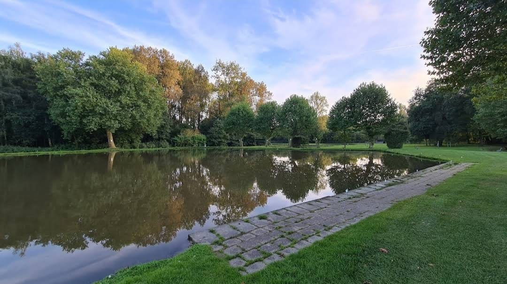
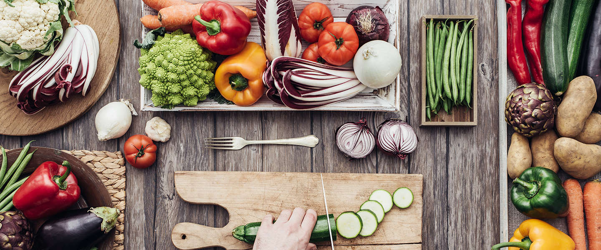

Plaats
Het werkweek koken vond plaats in België, in de buurt van het dorpje Blégny.
.png)
De hele reis gingen we in drie 8-personen busjes door Nederland en België
SearchHet werkweek koken vond plaats in België, in de buurt van het dorpje Blégny.
De hele reis gingen we in drie 8-personen busjes door Nederland en België
SearchDe werkweekgidsen deden hun best om ons te leren vissen. Dat vond plaats in dit meer. Chakir heeft één forrel gevangen, wat heel lastig was want de vissen hadden niet zo veel honger. Braylin had de grootste vangst gedaan omdat hij heel erg gekalmeerd op het juiste moment ging wachten.
Elk dag(ma t/m vr) werd het ontbijt klaargemaakt door de docenten. Deze ontbijten hadden elke keer een thema zoals: fitgirl, Schotse ontbijt etc. Op dinsdag en donderdag moesten de leerlingen het avondeten klaarmaken. Er werden groepen gemaakt en op dinsdag werd er door een groep leerlingen Mexicaanse gerechten voorbereid, zoals taco's, burrito's en Mexicaanse salade. Op donderdag werden de vissen die we gevangen hadden gebruikt om het avondeten voor te bereiden.
Op vrijdag werden we naar een ver gelegen mijn gebracht, waar mysterieuze verhalen over werden verteld. Volgens de gidsern waren in de koolmijn soort van 67 mannen om het leven gekomen als gevolg van een instorting. Er wordt gezegd dat de zielen van de mannen nod door de mijn rondzweven omdat er in bepaalde tijden geschreeuw, kreten van lijden, wordt waargenomen. Dit beweren de buren die in de omgeving wonen.
.jpg)